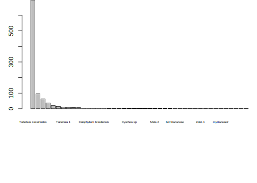
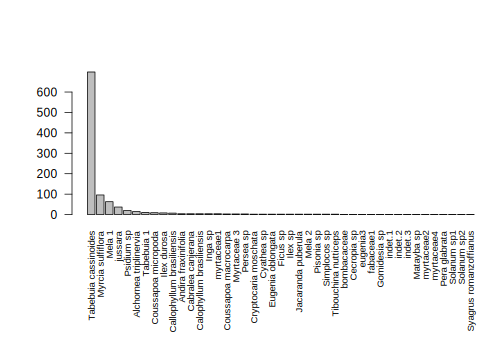
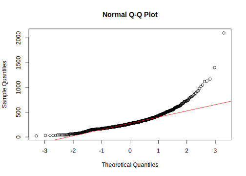

12.3 As variáveis têm distribuição normal?
A função density() que juntamente com hist(), que você já conhece, permite visualizar a densidade probabilística de uma variável numérica, ou seja descreve a distribuição de probabilidade, isto é, a chance de uma variável assumir um valor ao longo de um espaço (densidade) de valores.
A função dnorm() permite obter a densidade probabilistica de uma distribuição normal teórica, para a mesma média e mesmo desvio padrão dos teus dados.
Com isso você pode visualizar a distribuição dos seus dados e sobrepor a isso como seria a distribuição se os seus dados fossem normais.
par(olp)?density # veja o help disso# plota a densidade probabilistica = a curva da probabilidade da variável assumir certos valores de altura
plot(stats::density(caixeta$h))
## Histograma com área = 1 e density probabilistica sobreposta (argumento prob=TRUE, muda o eixo y)
hist(caixeta$h, prob = T, breaks = 30, xlim = c(-1, max(caixeta$h) + 5))
# adiciona a linha da densidade
lines(stats::density(caixeta$h), col = "red", lwd = 2)
# adiciona a média
abline(v = mean(caixeta$h), col = "green", lwd = 2, lty = "solid")
# note que na média a densidade probabilística é maior que nas caudas da distribuição
# vamos adicionar sobre nossa distribuicao REAL a densidade probabilistica para uma distribuição normal com media e desvio igual ao dado## Adicionando uma curva da normal aos graficos
?dnorm # veja o help dessa função e suas variantes. veremos isso melhor abaixo# pega a densidade probabilística de uma distribuição normal teórica, para quantis de seu interesse, segundo uma média e um desvio padrão
dnorm(seq(0, 1, by = 0.25), mean = mean(caixeta$h), sd = sd(caixeta$h)) # esses são os valores que a distribuição probabilistica assume, numa distribuição normal que tem o mesma média e a mesmo desvio padrão que os seus dados## [1] 0.0003251756 0.0003317476 0.0003384336 0.0003452351 0.0003521537?curve # veja que curve depende de uma função, ela traça a curva de uma f(x), num intervalo especificado de x (que foi plotado por hist)hist(caixeta$h, prob = T, breaks = 30, xlim = c(-1, max(caixeta$h) + 5))
# adiciona a linha da densidade
lines(stats::density(caixeta$h), col = "red", lwd = 2)
# adiciona a média
abline(v = mean(caixeta$h), col = "green", lwd = 2, lty = "solid")
# combinamos as coisas e adicionamos a distribuição
# teórica sobre os nosso dados
## Usamos a funcao curve,
curve(expr = dnorm(x, mean = mean(caixeta$h), sd = sd(caixeta$h)), add = T, col = "blue", lwd = 2)# note que os dados neste caso seguem bem uma curva normal.
# Portanto, mesmo sem fazer um teste, essa figura sugere que os dados de altura do caixetal é normalAs funções qqnorm() e qqline() permitem visualizar rapidamente se uma variável qualquer segue uma distribuição normal, ao compara os valores dos quantis empíricos (observados), com valores dos quantis teóricos (i.e. esperados por uma distribuição normal).
A função rnorm() gera um conjunto de dados aleatórios que tem distribuição normal.
# Teste de normalidade
######################################
## Exemplo para o qqplot
##########################################
# vamos simular valores
?rnorm # funcao que gera valores aleatórios que seguem uma distribuicao normal## Sorteio de 100 valores de uma normal com media=30 e desvio-padrao=3
zz <- rnorm(100, 30, 3)
mean(zz)## [1] 30.03516sd(zz)## [1] 2.666064length(zz)## [1] 100hist(zz, prob = T)## Valores arredondados para 2 casa, e ordenados
x <- sort(round(rnorm(100, 30, 3), 2))
## Inspecionando os 5 primeiros e ultimos valores
x[1:5]## [1] 24.18 24.33 24.33 24.72 25.15x[95:100]## [1] 35.50 35.69 35.73 35.78 36.48 38.45## Calculo do percentil de cada valor
# relembre a funcao order (ela retorna os indices dos valores ordenados)
order(x) # veja que os indices estao sequenciais, porque geramos um vetor já pre-ordenado## [1] 1 2 3 4 5 6 7 8 9 10 11 12 13 14 15 16 17 18
## [19] 19 20 21 22 23 24 25 26 27 28 29 30 31 32 33 34 35 36
## [37] 37 38 39 40 41 42 43 44 45 46 47 48 49 50 51 52 53 54
## [55] 55 56 57 58 59 60 61 62 63 64 65 66 67 68 69 70 71 72
## [73] 73 74 75 76 77 78 79 80 81 82 83 84 85 86 87 88 89 90
## [91] 91 92 93 94 95 96 97 98 99 100# calculamos o percentil de cada valor, que é uma medida que indica o valor abaixo do qual uma certa porcentagem de observações existe. Por exemplo, o vigézimo percentil tem um valor, abaixo do qual 20% das observações são encontradas
px <- order(x) / 100
px## [1] 0.01 0.02 0.03 0.04 0.05 0.06 0.07 0.08 0.09 0.10 0.11 0.12 0.13 0.14 0.15
## [16] 0.16 0.17 0.18 0.19 0.20 0.21 0.22 0.23 0.24 0.25 0.26 0.27 0.28 0.29 0.30
## [31] 0.31 0.32 0.33 0.34 0.35 0.36 0.37 0.38 0.39 0.40 0.41 0.42 0.43 0.44 0.45
## [46] 0.46 0.47 0.48 0.49 0.50 0.51 0.52 0.53 0.54 0.55 0.56 0.57 0.58 0.59 0.60
## [61] 0.61 0.62 0.63 0.64 0.65 0.66 0.67 0.68 0.69 0.70 0.71 0.72 0.73 0.74 0.75
## [76] 0.76 0.77 0.78 0.79 0.80 0.81 0.82 0.83 0.84 0.85 0.86 0.87 0.88 0.89 0.90
## [91] 0.91 0.92 0.93 0.94 0.95 0.96 0.97 0.98 0.99 1.00# vejamos a correspondencia
# quantos valores são menores que o percentil 0.2 (ou 20%)?
sum(px < 0.2) # obviamente 19 se temos apenas 100 valores no nosso vetor## [1] 19# quais valores são esses
x[order(x)][px <= 0.2]## [1] 24.18 24.33 24.33 24.72 25.15 25.20 25.65 26.00 26.17 26.26 26.51 26.60
## [13] 26.62 26.79 26.93 26.96 27.07 27.28 27.31 27.31# qual o valor do percentil
x[order(x)][px == 0.2]## [1] 27.31hist(x, breaks = 20, col = "gray")
abline(v = x[order(x)][px == 0.2], col = "red")# as barras com valores menores ou iguais que o do percentil (linha vermelha), totalizam 20% das observações.
# com os percentis dos valores do dado original, podemos pegar a densidade probabilistica esperada se a distribuicao fosse normal
q.norm.x <- qnorm(px, mean = mean(x), sd = sd(x))
## Juntando valores originais, os percentis e os valores esperados em um dataframe, para facilitar a visualizacao
qq.plot.x <- data.frame(x = x, percentil = px, q.norm = q.norm.x)
qq.plot.x[1:5, ]| x | percentil | q.norm |
|---|---|---|
| 24.18 | 0.01 | 22.79771 |
| 24.33 | 0.02 | 23.63630 |
| 24.33 | 0.03 | 24.16836 |
| 24.72 | 0.04 | 24.56860 |
| 25.15 | 0.05 | 24.89417 |
qq.plot.x[95:100, ]| x | percentil | q.norm | |
|---|---|---|---|
| 95 | 35.50 | 0.95 | 35.01423 |
| 96 | 35.69 | 0.96 | 35.33980 |
| 97 | 35.73 | 0.97 | 35.74004 |
| 98 | 35.78 | 0.98 | 36.27210 |
| 99 | 36.48 | 0.99 | 37.11069 |
| 100 | 38.45 | 1.00 | Inf |
head(qq.plot.x)| x | percentil | q.norm |
|---|---|---|
| 24.18 | 0.01 | 22.79771 |
| 24.33 | 0.02 | 23.63630 |
| 24.33 | 0.03 | 24.16836 |
| 24.72 | 0.04 | 24.56860 |
| 25.15 | 0.05 | 24.89417 |
| 25.20 | 0.06 | 25.17129 |
## com isso eu posso comparar meus valores observados com os valores esperados se a distribuição fosse normal
plot(x ~ q.norm, data = qq.plot.x, xlab = "Quantis Esperados", ylab = "Valores Observados")
abline(0, 1, col = "red") # relacao esperada, caso os dados venham de uma populacao normal# note que a correlação é fortíssima, porque os usados no exemplo eram de fato normais, portanto, nenhuma surpresa nisso## A funcao qqnorm ja faz isto de uma vez para voce:
?qqnorm # veja o helpqqnorm(x)
qqline(x, col = "red")# suponha um dado não normal
# cria um exemplo lognormal (nao é uma distribuicao normal)
xlogn <- rlnorm(nrow(avesc), meanlog = 30, sdlog = 1)
hist(xlogn, prob = T, breaks = 20)
lines(stats::density(xlogn), col = "red", lwd = 2)# nao é uma cuva normal, certo?
# mostra o QQ Plot nessa situação (veja como os pontos saem da linha)
qqnorm(xlogn)
qqline(xlogn, col = "red")# entao vamos ver em dados reais
# altura, já vimos antes, tem distribuição bem normal
qqnorm(caixeta$h)
qqline(caixeta$h, col = "red")# cap por outro lado, é mais log normal
qqnorm(caixeta$cap)
qqline(caixeta$cap, col = "red")